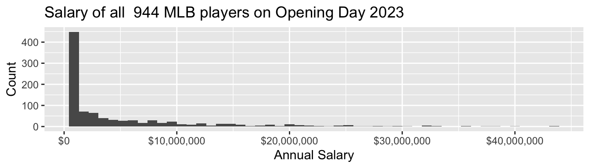
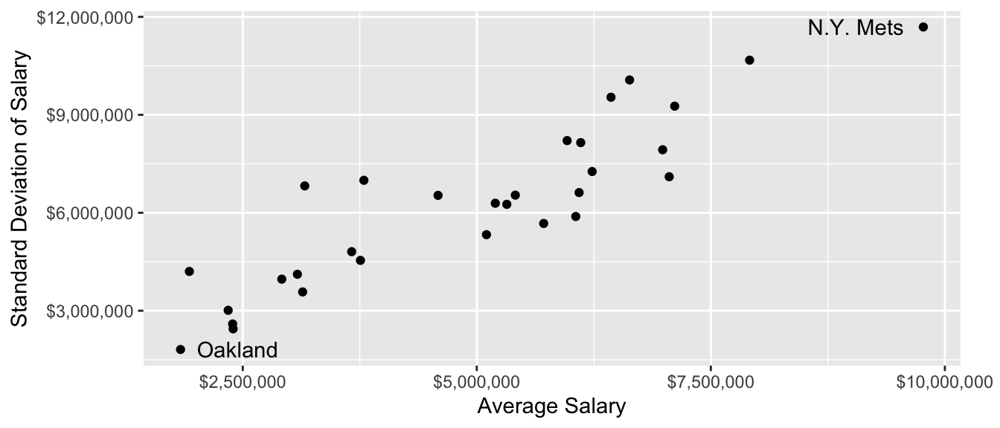
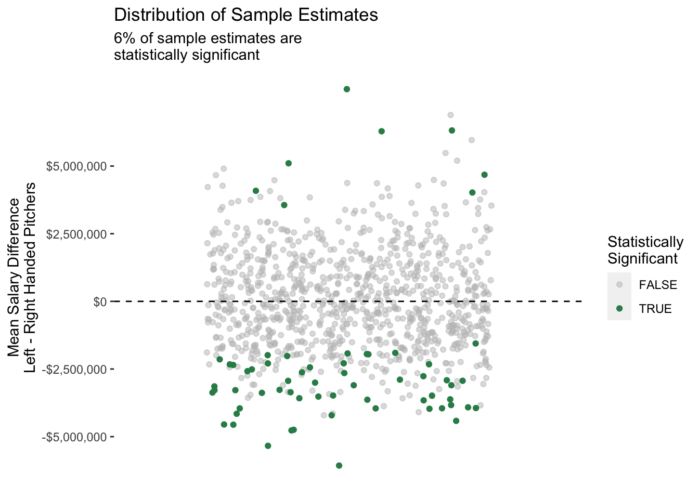

baseball <- read_csv("https://info3370.github.io/data/baseball.csv")Population Sampling
Claims about inequality are often claims about a population. Our data are typically only a sample! This module addresses the link between samples and populations.
This page covers two lecture (1/30 and 2/6).
- Lecture on 1/30 [slides] covers full count enumeration through the Current Population Survey. After lecture, you should read about probability sampling and register for an account at cps.ipums.org.
- Lecture on 2/6 [slides] uses salaries of Major League Baseball players to carry out three sampling strategies and explore their performance. After class, you should read Groves 2011 on the past and future of sampling
Heads-up!
You will want your computer in lecture on 2/6.
Full count enumeration
What proportion of our class prefers to sit in the front of the room?
We answered this question in class using full count enumeration: list the entire target population and ask them the question. Full count enumeration is ideal because it removes all statistical sources of error. But in settings with a larger target population, the high cost of full count enumeration may be prohibitive.
Simple random sample
We carried out a simple random sample1 in class.
- everyone generated a random number between 0 and 1
- those with values less than 0.1 were sampled
- our sample estimate was the proportion of those sampled to prefer the front of the room
In a simple random sample, each person in the population is sampled with equal probabilities. Because the probabilities are known, a simple random sample is a probability sample.
Unequal probability sample
Suppose we want to make subgroup estimates:
- what proportion prefer the front, among those sitting in the first 3 rows?
- what proportion prefer the front, among those sitting in the back 17 rows?
In a simple random sample, we might only get a few or even zero people in the first 3 rows! To reduce the chance of this bad sample, we could draw an unequal probability sample:
- those in rows 1–3 are selected with probability 0.5
- those in rows 4–20 are selected with probability 0.1
Our unequal probability sample will over-represent the first three rows, thus creating a large enough sample in this subgroup to yield precise estimates.
Having drawn an unequal probability sample, suppose we now want to estimate the class-wide proportion who prefer sitting in the front. We will have a problem: those who prefer the front may be more likely to sit there, and they are also sampled with a higher probability! Sample inclusion is related to the value of our outcome.
Because the sampling probabilities are known, we can correct for this by applying sampling weights, which for each person equals the inverse of the known probability of inclusion for that person.
For those in rows 1–3,
- we sampled with probability 50%
- on average 1 in every 2 people is sampled
- each person in the sample represents 2 people in the population
- \(w_i = \frac{1}{\text{P}(\text{Sampled}_i)} = \frac{1}{.5} = 2\)
For those in rows 4–20,
- we sampled with probability 10%
- on average 1 in every 10 people is sampled
- each person in the sample represents 10 people in the population
- \(w_i = \frac{1}{\text{P}(\text{Sampled}_i)} = \frac{1}{.1} = 10\)
To estimate the population mean, we can use the weighted sample mean,
\[\frac{\sum_i y_iw_i}{\sum_i w_i}\]
Stratified random sample
We could also draw a stratified random sample by first partitioning the population into subgroups (called strata) and then drawing samples within each subgroup. For instance,
- sample 10 of the 20 people in rows 1–3
- sample 10 of the 130 people in rows 4–17
In simple random or unequal probability sampling, it is always possible that by random chance we sample no one in the front of the room. Stratified random sampling rules this out: we know in advance how our sample will be balanced across the two strata.
Note
In our real-data example at the end of this page, the Current Population Survey is stratified by state so that the Bureau of Labor Statistics knows in advance that they will gather a sufficient sample to estimate unemployment in each state.
A real case: The Current Population Survey
Every month, the Bureau of Labor Statistics in collaboration with the U.S. Census Bureau collects data on unemployment in the Current Population Survey (CPS). The CPS is a probability sample designed to estimate the unemployment rate in the U.S. and in each state.
We will be using the CPS in discussion. This video introduces the CPS and points you toward where you can access the data via IPUMS-CPS.
Example: Baseball players
As one example where full-count enumeration is possible, we will examine the salaries of all 944 Major League Baseball Players who were on active rosters, injured lists, and restricted lists on Opening Day 2023. These data were compiled by USA Today and are available in baseball.csv.
# A tibble: 944 × 4
player team position salary
<chr> <chr> <chr> <dbl>
1 Scherzer, Max N.Y. Mets RHP 43333333
2 Verlander, Justin N.Y. Mets RHP 43333333
3 Judge, Aaron N.Y. Yankees OF 40000000
4 Rendon, Anthony L.A. Angels 3B 38571429
5 Trout, Mike L.A. Angels OF 37116667
# ℹ 939 more rowsSalaries are high, and income inequality is also high among baseball players
- 4% were paid the league minimum of $720,000
- 53% were paid less than $2,000,000
- the highest-paid players—Max Scherzer and Justin Verlander—each earned $43,333,333
- the highest-paid half of players take home 92% of the total pay

Pay also varies widely across teams!

Conceptualize the sampling strategy
Suppose you did not have the whole population. You still want to learn the population mean salary! How could you learn that in a sample of 60 out of the 944 players?
Before reading on, think through three questions:
- What would it mean to use each of these strategies?
- a simple random sample of 60 players
- a sample stratified by the 30 MLB teams
- a sample clustered by the 30 MLB teams
- Which strategies have advantages in terms of
- being least expensive?
- having the best statistical properties?
- Given that you already have the population, how would you write some R code to carry out the sampling strategies? You might use
sample_n()and possiblygroup_by().
Sampling strategies in code
In a simple random sample, we draw 60 players from the entire league. Each player’s probability of sample inclusion is \(\frac{60}{n}\) where \(n\) is the number of players in the league (944).
simple_sample <- function(population) {
population |>
# Define sampling probability and weight
mutate(
p_sampled = 60 / n(),
sampling_weight = 1 / p_sampled
) |>
# Sample 60 players
sample_n(size = 60)
}To use this function, we give it the baseball data as the population and it returns a tibble containing a sample of 60 players.
simple_sample(population = baseball)# A tibble: 60 × 6
player team position salary p_sampled sampling_weight
<chr> <chr> <chr> <dbl> <dbl> <dbl>
1 Assad, Javier Chicago Cubs RHP 721500 0.0636 15.7
2 Garcia, Jose Cincinnati SS 730000 0.0636 15.7
3 Gore, MacKenzie Washington LHP 723300 0.0636 15.7
4 Rucker, Michael Chicago Cubs RHP 737000 0.0636 15.7
5 Wong, Kolten Seattle 2B 10000000 0.0636 15.7
6 Kelly, Merrill Arizona RHP 8500000 0.0636 15.7
7 Renfroe, Hunter L.A. Angels OF 11900000 0.0636 15.7
8 Urias, Luis Milwaukee 2B 4700000 0.0636 15.7
9 Alvarado, Jose Philadelphia LHP 3450000 0.0636 15.7
10 Law, Derek Cincinnati RHP 1000000 0.0636 15.7
# ℹ 50 more rowsIn a stratified random sample by team, we sample 2 players on each of 30 teams.
Each player’s probability of sample inclusion is \(\frac{2}{n}\) where \(n\) is the number on that player’s team (which ranges from 28 to 35).
stratified_sample <- function(population) {
population |>
# Draw sample within each team
group_by(team) |>
# Define sampling probability and weight
mutate(
p_sampled = 2 / n(),
sampling_weight = 1 / p_sampled
) |>
# Within each team, sample 2 players
sample_n(size = 2)
}In a sample clustered by team, we might first sample 3 teams and then sample 20 players on each sampled team. A clustered sample is often less costly, for example because you would only need to call up the front office of 3 teams instead of 30 teams.
Each player’s probability of sample inclusion is P(Team Chosen) \(\times\) P(Chosen Within Team) = \(\frac{3}{30}\times\frac{20}{n}\) where \(n\) is the number on that player’s team (which ranges from 28 to 35).
# Strategy C
clustered_sample <- function(population) {
# First, sample 3 teams
sampled_teams <- population |>
# Make one row per team
distinct(team) |>
# Sample 3 teams
sample_n(3) |>
# Store those 3 team names in a vector
pull()
# Then load data on those teams and sample 20 per team
population |>
filter(team %in% sampled_teams) |>
# Define sampling probability and weight
group_by(team) |>
mutate(
p_sampled = (3 / 30) * (20 / n()),
sampling_weight = 1 / p_sampled
)
# Sample 20 players
sample_n(20) |>
ungroup()
}Weighted mean estimator
Given a sample, how do we estimate the population mean? The weighted mean estimator can also be placed in a function
- we hand our sample to the function
- we get a numeric estimate back
estimator <- function(sample) {
sample |>
summarize(estimate = weighted.mean(
x = salary,
w = sampling_weight
)) |>
pull(estimate)
}Here is what it looks like to use the estimator.
sample_example <- simple_sample(population = baseball)
estimator(sample = sample_example)[1] 6152742Try it for yourself! The true mean salary in the league is $4,965,481. How close do you come when you apply the estimator to a sample drawn by each strategy?
Evaluating performance: Many samples
We might like to know something about performance across many repeated samples. The replicate function will carry out a set of code many times.
sample_estimates <- replicate(
n = 1000,
expr = {
a_sample <- simple_sample(population = baseball)
estimator(sample = a_sample)
}
)Simulate many samples. Which one is the best? Strategy A, B, or C?
The danger of one sample
In actual science, we typically have only one sample. Any estimate we produce from that sample involves some signal about the population quantities, and also some noise. Herein is the danger: researchers are very good at telling stories about why their sample evidence tells something about the population, even when it may be random noise. We illustrate this with an example.
Does salary differ between left- and right-handed pitchers? To address this question, I create a tibble with only the pitchers(those for whom the position variable takes the value LHP or RHP).
pitchers <- baseball |>
filter(position == "LHP" | position == "RHP")To illustrate what can happen with a sample, we now draw a sample. Let’s first set our computer’s random number seed so we get the same sample each time.
set.seed(1599)Then draw a sample of 40 pitchers
pitchers_sample <- pitchers |>
sample_n(size = 40)and examine the mean difference in salary.
pitchers_sample |>
group_by(position) |>
summarize(salary_mean = mean(salary))# A tibble: 2 × 2
position salary_mean
<chr> <dbl>
1 LHP 9677309.
2 RHP 3182428.The left-handed pitchers make millions of dollars more per year! You can probably tell many stories why this might be the case. Maybe left-handed pitchers are needed by all teams, and there just aren’t many available because so few people are left-handed!
What happens if we repeat this process many times? The figure below shows many repeated samples of size 40 from the population of pitchers.

Our original result was really random noise: we happened by chance to draw a sample with some highly-paid left-handed pitchers!
This exercise illustrates what is known as the replication crisis: findings that are surprising in one sample may not hold in other repeated samples from the same population, or in the population as a whole. The replication crisis has many sources. One principal source is the one we illustrated above: sample-based estimates involve some randomness, and well-meaning researchers are (unfortunately) very good at telling interesting stories.
One solution to the replication crisis is to pay close attention to the statistical uncertainty in our estimates, such as that from random sampling. Another solution is to re-evaluate findings that are of interest on new samples. In any case, both the roots of the problem and the solutions are closely tied to sources of randomness in estimates, such as those generated using samples from a population.
The future of sample surveys
Sample surveys served as a cornerstone of social science research from the 1950s to the present. But there are concerns about their future:
- some sampling frames, such as landline telephones, have become obsolete
- response rates have been falling for decades
- sample surveys are slower and more expensive than digital data
What is the future for sample surveys? How can they be combined with other data?
We will close with a discussion of these questions, which you can also engage with in the Groves 2011 reading that follows this module.
Footnotes
Technically, a simple random sample draws units independently with equal probabilities, and with replacement. Our sample is actually drawn without replacement. In an infinite population, the two are equivalent.↩︎